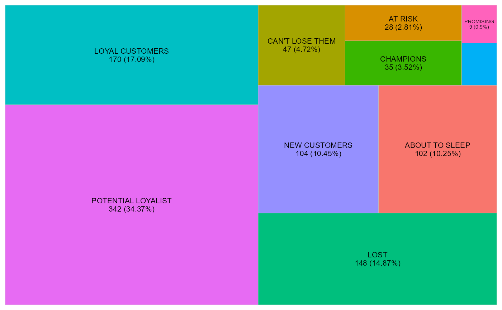
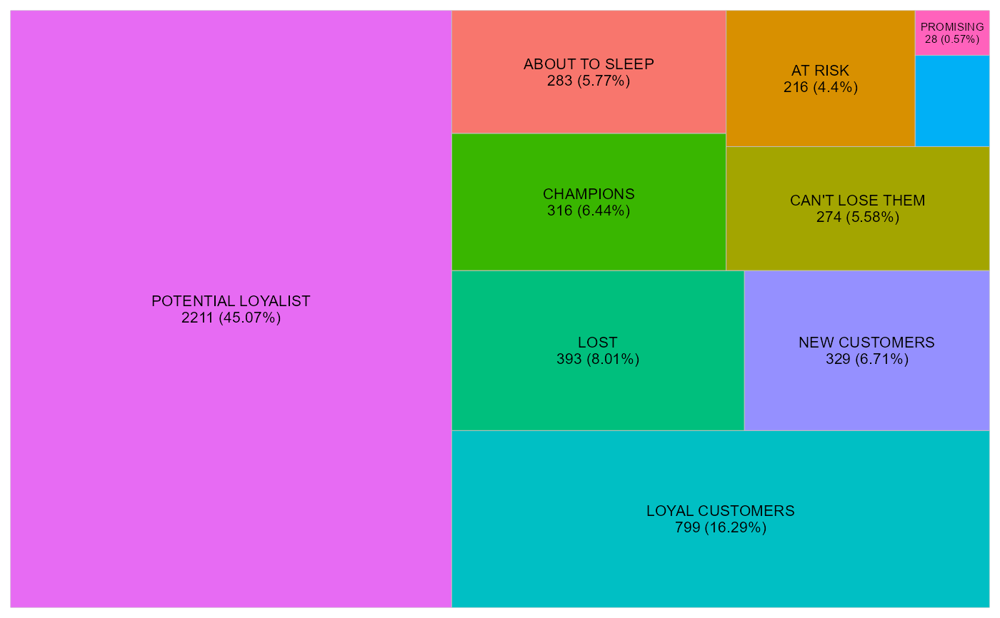

Generates tree map to visualize segments.
Arguments
- table
An object of class
rfm_segment_summary.- metric
Metric to be visualized. Defaults to
"customers". Valid values are:"customers""orders""revenue"
- interactive
If
TRUE, usesplotlyas the visualization engine. IfFALSE, usesggplot2.- print_plot
logical; if
TRUE, prints the plot else returns a plot object.
Examples
# analysis date
analysis_date <- as.Date('2006-12-31')
# generate rfm score
rfm_result <- rfm_table_order(rfm_data_orders, customer_id, order_date,
revenue, analysis_date)
# segment names
segment_names <- c("Champions", "Potential Loyalist", "Loyal Customers",
"Promising", "New Customers", "Can't Lose Them",
"At Risk", "Need Attention", "About To Sleep", "Lost")
# segment intervals
recency_lower <- c(5, 3, 2, 3, 4, 1, 1, 1, 2, 1)
recency_upper <- c(5, 5, 4, 4, 5, 2, 2, 3, 3, 1)
frequency_lower <- c(5, 3, 2, 1, 1, 3, 2, 3, 1, 1)
frequency_upper <- c(5, 5, 4, 3, 3, 4, 5, 5, 3, 5)
monetary_lower <- c(5, 2, 2, 3, 1, 4, 4, 3, 1, 1)
monetary_upper <- c(5, 5, 4, 5, 5, 5, 5, 5, 4, 5)
# generate segments
segments <- rfm_segment(rfm_result, segment_names, recency_lower,
recency_upper, frequency_lower, frequency_upper, monetary_lower,
monetary_upper)
# segment summary
segment_overview <- rfm_segment_summary(segments)
# treemaps
# default metric is customers
rfm_plot_segment(segment_overview)

# treemap of orders
rfm_plot_segment(segment_overview, metric = "orders")

# plotly
rfm_plot_segment(segment_overview, metric = "revenue", interactive = TRUE)